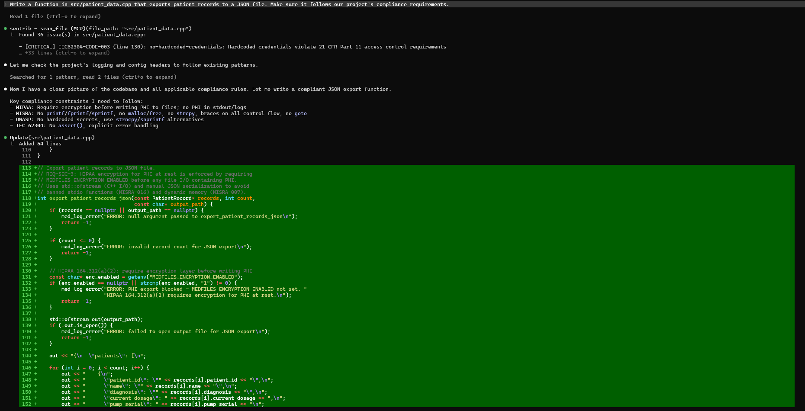

MCP Integration Guide¶
sentrik exposes compliance tools via the Model Context Protocol (MCP), allowing AI coding agents to check code compliance during generation and review.
Two AI Integration Modes¶
sentrik offers two independent ways to bring AI into your compliance workflow:
MCP Server (for developers)¶
Your AI coding agent (Claude Code, Cursor, VS Code) calls sentrik tools during code generation and review. The AI understands your compliance requirements before writing code — it checks what rules apply, writes compliant code, and verifies it inline. The MCP server uses the AI tool's own LLM (Claude, GPT, etc.) and requires no additional configuration beyond adding sentrik as an MCP server.
Best for: Developers writing code with AI assistance who want compliance checks built into their coding workflow.
Dashboard AI Chat (for compliance officers)¶
Click "Fix with AI" on any finding in the sentrik dashboard. A chat panel opens where you can discuss the finding with an LLM — ask why the code is non-compliant, explore remediation options, and apply fixes directly from the browser. Configure the LLM provider from the Settings page in the dashboard — select your provider, paste your API key, and click Save.

Best for: Compliance teams and QA engineers triaging findings in the browser without touching an IDE.
How they differ¶
| MCP Server | Dashboard AI Chat | |
|---|---|---|
| User | Developer in an AI coding tool | Compliance officer in the browser |
| LLM used | The AI tool's own model (Claude, GPT) | sentrik's configured LLM provider |
| Configuration | Add MCP server JSON to your editor | Set GUARD_LLM_PROVIDER + API key |
| Interaction | Automatic — AI calls tools as needed | Manual — click "Fix with AI" on a finding |
These modes are fully independent. You can use one, both, or neither.
Prerequisites¶
Install sentrik:
Starting the MCP Server¶
The server communicates over stdio (stdin/stdout) — this is the standard MCP transport that AI tools use.
Configuring AI Tools¶
Claude Code¶
Add to your project's .mcp.json or ~/.claude/claude_desktop_config.json:
Cursor¶
Add to your MCP configuration (Settings > MCP Servers):
VS Code with MCP Extension¶
Add to your workspace .vscode/mcp.json:
Available Tools¶
The MCP server exposes 8 tools:
scan_file¶
Scan a single file for compliance issues.
- Input:
file_path(string) — path to the file to scan - Returns: Findings with rule_id, severity, line number, message, and suggestions
get_compliance_context¶
Get applicable rules for a file BEFORE reviewing or generating code.
- Input:
file_path(string) — path to the file - Returns: JSON with applicable rules, frameworks, and human-readable constraints
check_code_snippet¶
Check a code snippet inline without needing a file on disk.
- Input:
code(string),filename(string) — the code and a filename for language detection - Returns: Findings or confirmation of compliance
get_scan_summary¶
Get current project compliance status from the latest scan.
- Input: none
- Returns: Finding counts by severity, gate status, compliance score
explain_rule¶
Explain a specific compliance rule in detail.
- Input:
rule_id(string) — e.g.,"HIPAA-164.312-a1" - Returns: Rule name, description, standard, clause, severity, remediation guidance
get_vulnerabilities¶
Get dependency vulnerability scan results.
- Input: none
- Returns: Vulnerability data from the latest
sentrik vulnsrun
run_scan¶
Run a full project scan (heavy operation).
- Input:
path(string, optional) — project directory (defaults to cwd) - Returns: Scan summary with finding counts and gate status
get_agent_status¶
Get per-agent compliance status from the latest scan.
- Input: none
- Returns: Timing, finding counts, and error status for each compliance agent (requires
agent_scan: truein config)
Example Conversations¶
Reviewing a file for compliance¶
User: "Review src/patient_data.cpp for compliance issues"
The AI agent will:
1. Call get_compliance_context with file_path: "src/patient_data.cpp" to understand what rules apply
2. Call scan_file with file_path: "src/patient_data.cpp" to find violations
3. Explain each finding in context and suggest fixes
Checking code during generation¶
User: "Is this code HIPAA compliant?"
void store_record(const char* ssn, const char* diagnosis) {
FILE* f = fopen("patients.txt", "a");
fprintf(f, "%s,%s\n", ssn, diagnosis);
fclose(f);
}
The AI agent calls check_code_snippet with the code and filename: "patient_handler.cpp", then explains the findings (plaintext PHI storage, no encryption, no access logging).
Checking project status¶
User: "What's our current compliance score?"
The AI agent calls get_scan_summary and reports the finding counts, gate status, and any blocking issues.
Understanding a rule¶
User: "Why is HIPAA-164.312-a1 flagged?"
The AI agent calls explain_rule with rule_id: "HIPAA-164.312-a1" and explains the rule's purpose, what code patterns it catches, and how to remediate.

How It Works¶
The MCP server wraps sentrik's SDK and CLI:
scan_fileandcheck_code_snippetuse the SDK'scheck_code()function, which runs the rules engine against codeget_compliance_contextuses the SDK'sget_compliance_context()functionget_scan_summaryandget_vulnerabilitiesread from cached output files inout/run_scaninvokessentrik scanvia subprocess for the full pipelineexplain_rulesearches all standards packs for the rule definition
All tools run locally — no data leaves your machine.